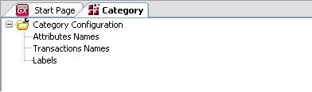

The Pattern Settings for Category Pattern determines some general aspects applied to the objects that will be generated.  Here you can configure properties such as the following: Attribute NamesYou can specify the name of the attributes for CategoryItem Transaction Transaction NamesHere you can specify the Transaction names that will be applied to the Category element and the Relation element. LabelsIt allows you to translate the texts generated by the Category Pattern See more here.
|
| Backlinks | |
| Category Pattern | Pattern settings |